1. 前言
JavaScript中的事件有很多，记是记不住的，也没有意义，这节就是将这些事件分类整理，方便用到的时候速查：
- 鼠标事件
- 键盘事件
- 事件对象Event
- 目标事件对象
- 框架/对象(Frame/Object)事件
- 表单事件
- 剪贴板事件
- 打印事件
- 拖动事件
- 动画事件
- 过渡事件
- 其它事件
- 事件监听对象
- 文档事件对象
- 鼠标/键盘事件对象
2. 鼠标事件
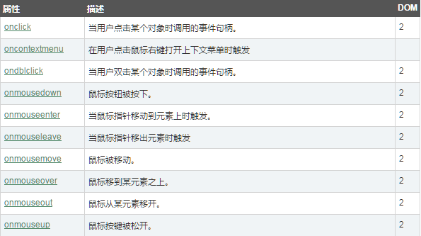
3. 键盘事件
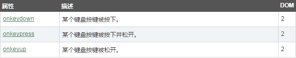
4. 事件对象Event
属性：

方法：

5. 目标事件对象
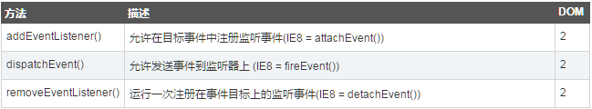
6. 框架/对象(Frame/Object)事件
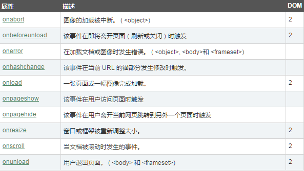
7. 表单事件
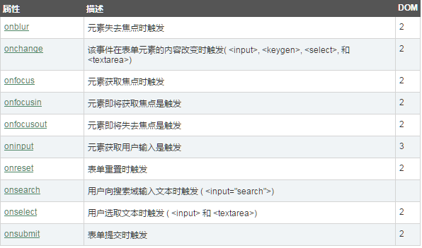
8. 剪贴板事件
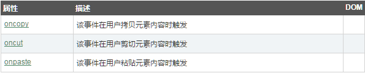
9. 打印事件
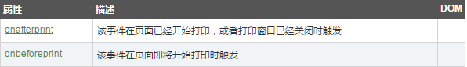
10. 拖动事件
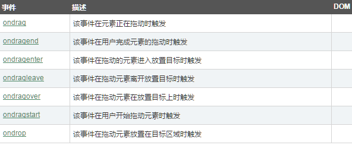
11. 动画事件

12. 过渡事件
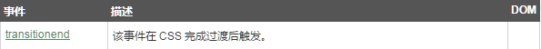
13. 其它事件
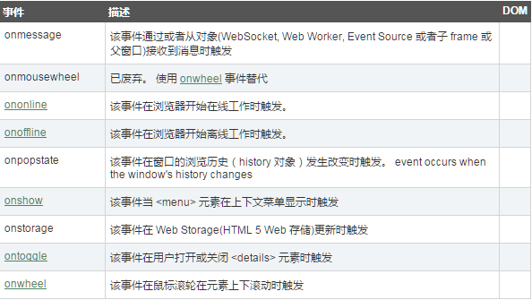
14. 事件监听对象
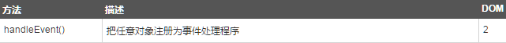
15. 文档事件对象
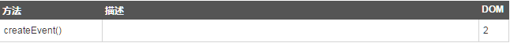
16. 鼠标/键盘事件对象
属性：
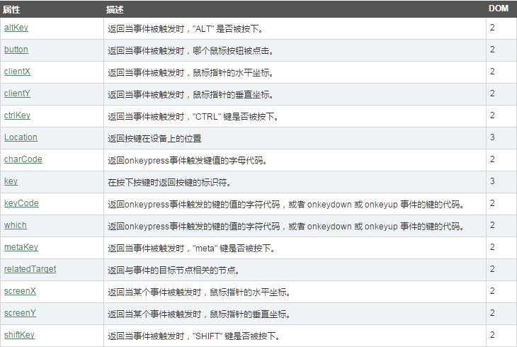
方法：
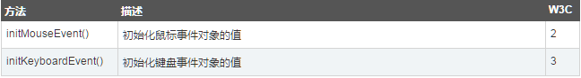